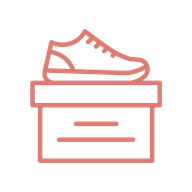
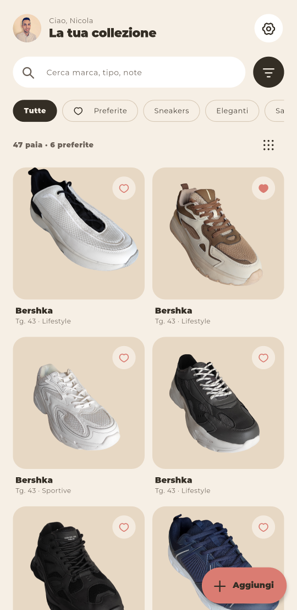
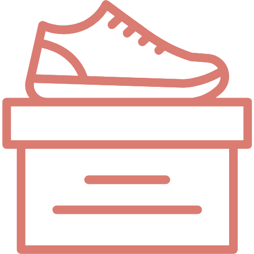

ShoxTutte le tue scarpe,
in una scatola
L'app per catalogare la tua collezione di scarpe e ritrovare subito il paio giusto.


Shox è pronta, mancano le tue scarpe
La uso ogni giorno per la mia collezione, ma ogni scarpiera è diversa: voglio capire come funziona con la tua.
Bastano pochi paia per farti un'idea: provala e dimmi cosa migliorare.
Ogni paio al suo posto
Cataloga
Foto con lo sfondo rimosso in automatico, marca, taglia, categoria, stagione e colori.
Trova
Ricerca, filtri per categoria, colore e stagione, e i tuoi preferiti a portata di mano.
Analizza
Statistiche della collezione per colore, marca e tipo, ed esportazione in PDF.
Conserva
Tutto sincronizzato nel cloud, più un backup completo con le foto in un file ZIP.
Tre passi per ogni paio
Fotografala
Scatti una foto o la scegli dalla galleria: lo sfondo sparisce da solo.
Descrivila
Marca, taglia, categoria, stagione e colori in pochi tocchi.
Ritrovala
Cerchi, filtri o sfogli la collezione: sai sempre cosa hai.
Come installarla
Su Android
- Apri il link, scorri fino ad Assets e tocca il file
.apk. - Se il telefono lo chiede, consenti "Installa app sconosciute" per l'app da cui lo stai aprendo (browser, WhatsApp, File…).
- Tocca Installa, poi apri Shox.
- Accedi con Google o registrati con la tua email.
Durante l'installazione Android potrebbe avvisarti che l'app non è sicura o mostrare "App bloccata per proteggere il dispositivo": lo segnala per tutte le app installate fuori dal Play Store, dove Shox per ora non c'è. Tocca Altri dettagli → Installa comunque. Shox usa solo i dati descritti nell'informativa privacy. Fotocamera e foto vengono chieste solo quando servono.
Serve Android 7.0 o successivo. Per ora Shox è disponibile solo su Android.
Perché si chiama Shox
Il nome unisce Shoes e Box: la scatola che contiene tutta la tua collezione.
Shox è nata per rispondere a una domanda semplice: quante scarpe ho, e quali non metto mai?